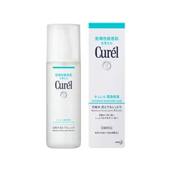

メイク前に、おでこが乾いて粉っぽくなる人

キュレル
潤浸保湿 化粧水III とてもしっとり 150ml
150ml
¥1,927税込・出典掲載価格
選び方と声
- 選ぶ条件：メイク前に肌が乾いたままになる人。メーカー・商品ページの説明では、弱酸性・無香料・無着色・アルコールフリー。1回の量の目安はポンプ3〜4押し
- コーセーのページは、乾燥している肌にファンデを塗ると粉っぽくなってシワを目立たせる、と書いている。重ねる回数ではなく、メイク前に乾いたままにしない、という考え方
気になる声気になる点：商品ページに、肌が弱っている時や敏感になっている時にヒリつきを感じた、という声がある。違和感が続くときは使用をやめる
販売価格・容量・送料はリンク先でご確認ください